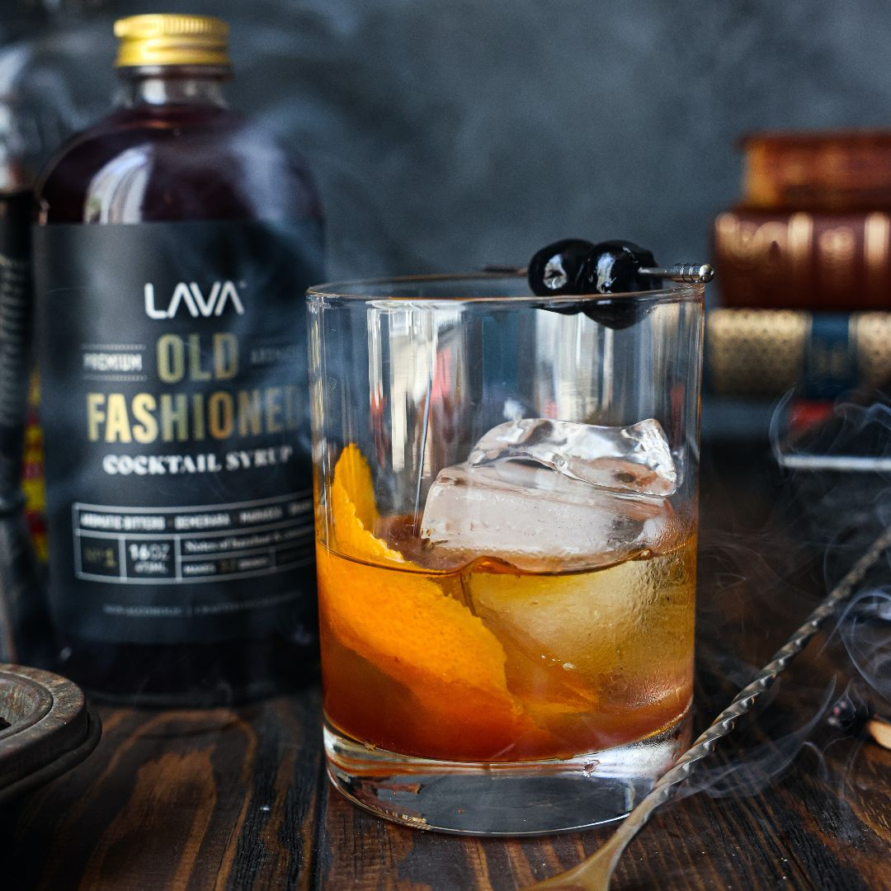
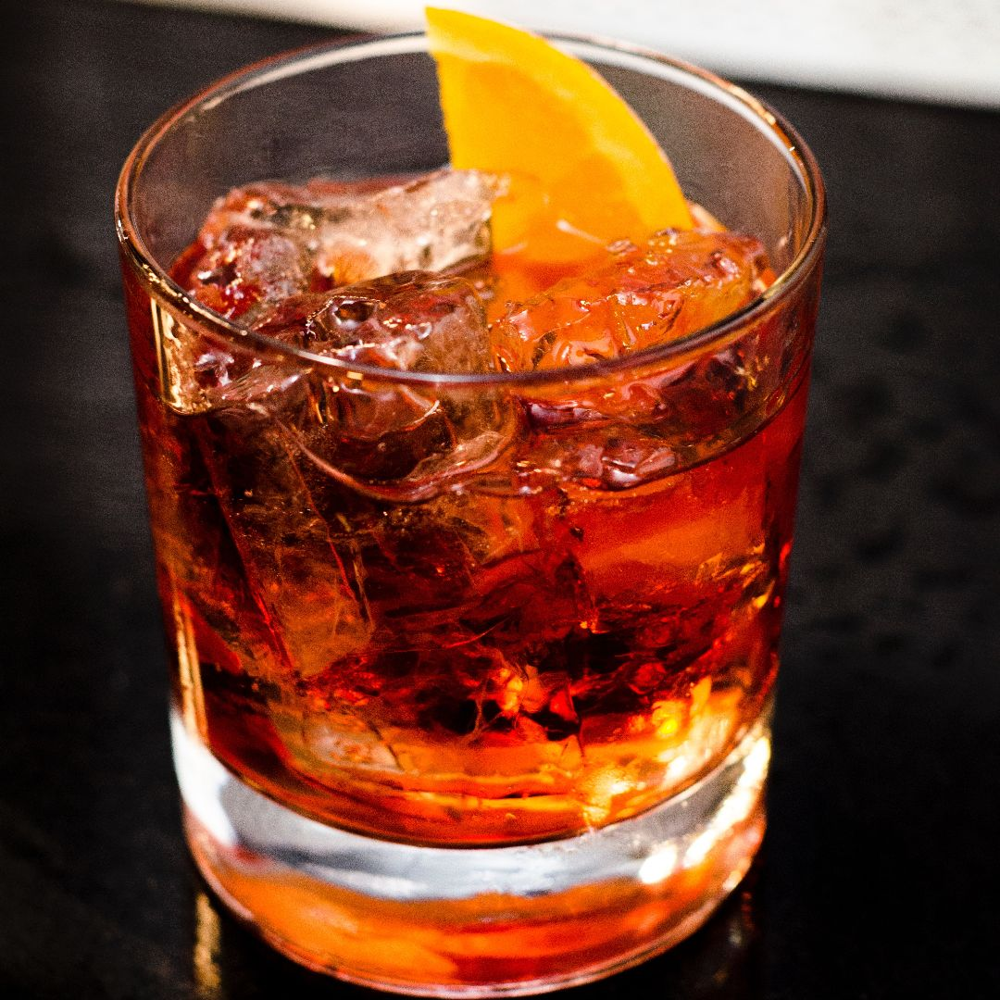

Mojito

Probably the most famous and most popular drink. Easy and adjustable for your preferences!
 The Friday Drink
The Friday Drink
Probably the most famous and most popular drink. Easy and adjustable for your preferences!
A simple drink where you can try different flavours of gin and tonic to get different variants.

This drink was relatively unknown in Sweden for a long time, but became immensely popular beacause of the TV-show Mad Men.
The margarita is one of the most popular classic cocktails in history. In fact, it's hard to find a drink that's more universally loved!
A classic and popular drink that is said to have been created as early as the year 1870.
A very popular variant of the classic drink Daquiri.
A very popular coffee drink! Is often ordered in the club or pub because it's a bit of a hassle to make one at home.

This drink is a sophisticated aperitif featuring equal parts of gin, Campari, and sweet vermouth and so easy that anyone can mix it up.
Piña Colada can be made in a bunch of different ways!